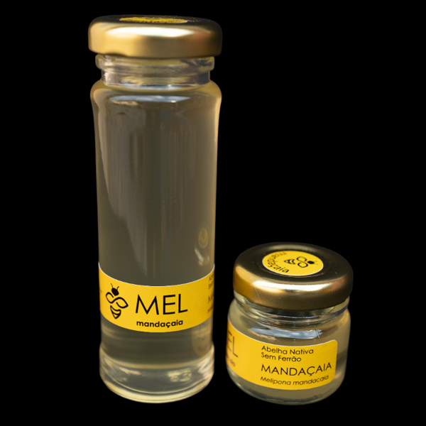
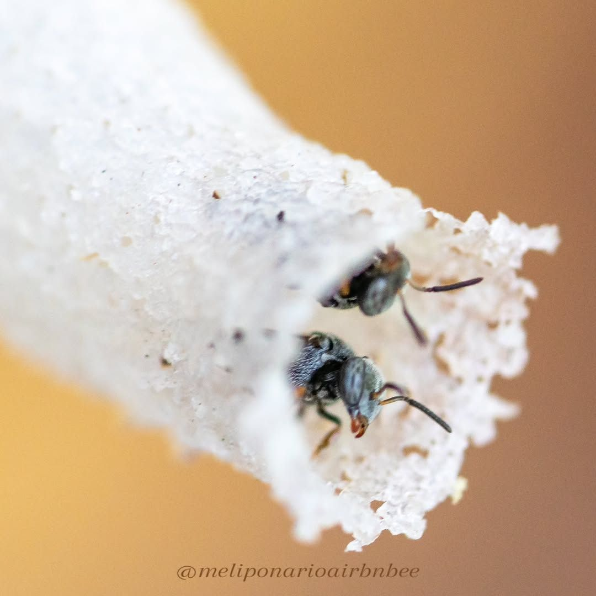
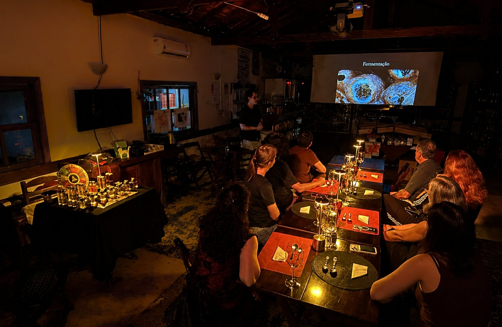
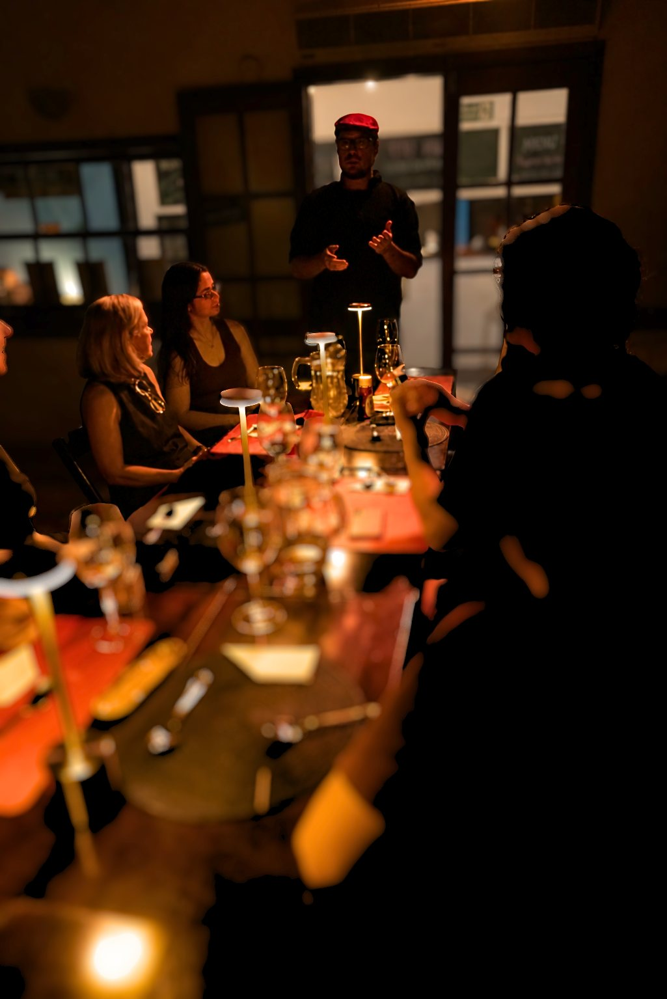
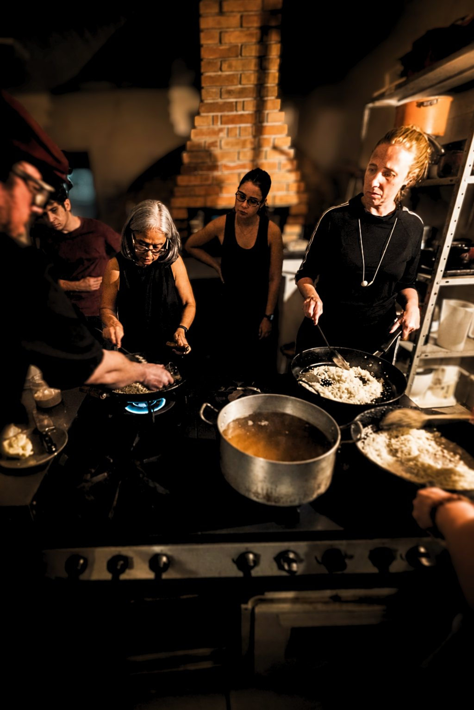
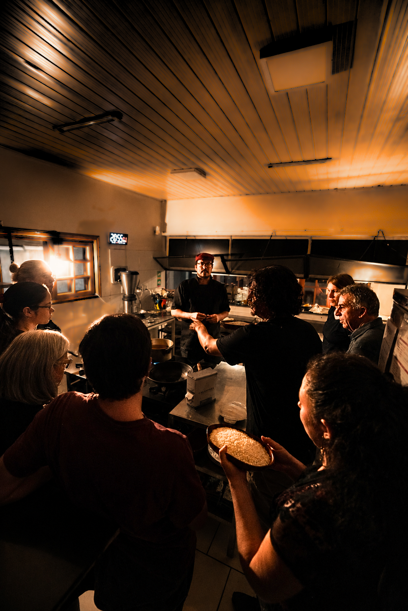

Um produtor local à mesa
Guilherme Aguirre apresenta o universo do Meliponário Airbnbee e aproxima o grupo da produção de meles de abelhas nativas sem ferrão.
Provar um ingrediente, entender de onde ele vem e descobrir o que ele pode virar na cozinha.
Nesta edição da Oficina Comestível, a Paulistânia Desvairada recebe Guilherme Aguirre, do Meliponário Airbnbee, para uma experiência dedicada aos meles de abelhas nativas sem ferrão.
Começamos pela origem: conhecemos diferentes espécies, territórios e características desses meles. Depois, seguimos para uma degustação guiada, afinando o paladar para perceber acidez, aroma, textura e intensidade.
E então vem a transformação: na cozinha, o grupo prepara coletivamente um risoto de queijo, pensado para encontrar o mel no ponto certo.

Guilherme Aguirre apresenta o universo do Meliponário Airbnbee e aproxima o grupo da produção de meles de abelhas nativas sem ferrão.
Jandaíra, jupará, uruçu-amarela, tiúba, jataí e borá entram numa degustação guiada para revelar diferenças sensoriais.
Acidez, aroma, textura, intensidade e persistência passam a ser percebidos de maneira mais consciente.
Depois de conhecer o ingrediente, o grupo prepara um risoto de queijo, explorando como o mel pode participar de uma preparação salgada.
A Oficina Comestível parte de um ingrediente e de quem o produz.
Em cada edição, convidamos um produtor local para apresentar um alimento a partir de sua origem, do território e do modo como é feito. Primeiro, provamos. Depois, a Paulistânia Desvairada leva esse ingrediente para a cozinha e investiga suas possibilidades de transformação.
A experiência junta produto, produtor, paladar e técnica.
Conhecer um ingrediente muda a maneira como a gente cozinha com ele.




Muitas vezes falamos de “mel” como se fosse uma coisa só.
Mas os meles de abelhas nativas podem variar profundamente em acidez, aroma, textura, doçura e intensidade.
Uma jataí não produz o mesmo mel que uma borá. Uma uruçu-amarela não oferece a mesma experiência de uma tiúba. Cada espécie, cada território e cada manejo deixam marcas sensoriais.
O que antes parecia apenas “doce” começa a revelar camadas.

Quem produz apresenta o ingrediente; quem cozinha investiga suas possibilidades.
Depois da degustação, a experiência muda de lugar.
Saímos da prova e entramos na cozinha.
O grupo prepara coletivamente um risoto de queijo, pensado para receber o mel sem transformá-lo apenas em elemento doce.
A proposta é encontrar equilíbrio: perceber como acidez, aroma e textura podem participar de um prato salgado e como o ingrediente se comporta quando passa pela transformação culinária.
Primeiro, conhecer. Depois, transformar. Por fim, comer junto.


Guilherme conduz a parte dedicada às abelhas nativas sem ferrão, à produção dos meles e às diferenças entre as espécies, aproximando o grupo do trabalho de quem está diretamente ligado ao ingrediente.
Depois, a Paulistânia Desvairada assume a etapa de transformação culinária, levando o que foi descoberto na degustação para dentro da cozinha.
Esse encontro entre produtor e cozinha é o coração da Oficina Comestível.
A experiência é a mesma para todos. Você escolhe o valor de acordo com sua realidade e com o quanto deseja apoiar a continuidade do projeto.
Garante sua participação e cobre o básico necessário para realizar a experiência.
Escolher R$ 120Um valor mais equilibrado, que ajuda a sustentar a continuidade do projeto e das próximas experiências.
Escolher R$ 150Para quem pode e deseja apoiar ainda mais a realização e o fortalecimento de novas oficinas e experiências.
Escolher R$ 18012 de novembro de 2026 · Paulistânia Desvairada / Restaurante Tio Dinho · Rua João Leone, 51 · Sousas · Campinas.
Não. A experiência foi pensada justamente para quem quer descobrir esse universo.
Sim. A degustação guiada inclui jandaíra, jupará, uruçu-amarela, tiúba, jataí e borá.
Sim. Depois da degustação, o grupo prepara coletivamente um risoto de queijo com mel.
Sim. A etapa culinária e a degustação do prato fazem parte da experiência.
Sim. A proposta acontece em grupo pequeno e favorece conversa, troca e encontro entre os participantes.
Sim. Também vendemos bebidas no local. Se preferir trazer a sua, cobramos taxa de rolha de R$ 25 por garrafa.